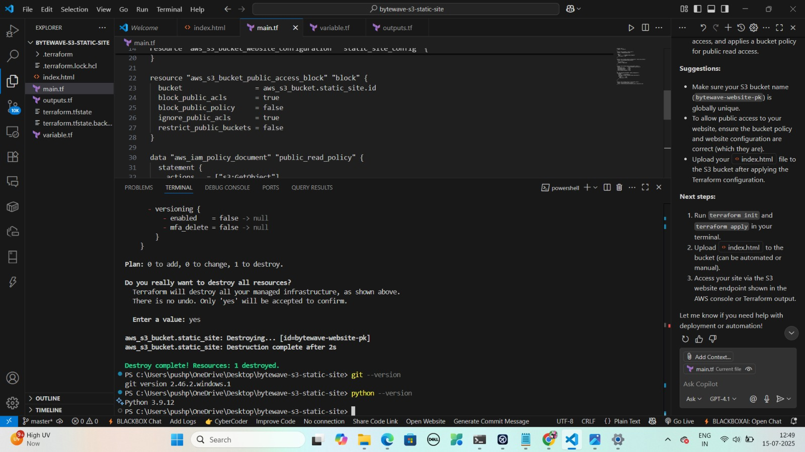
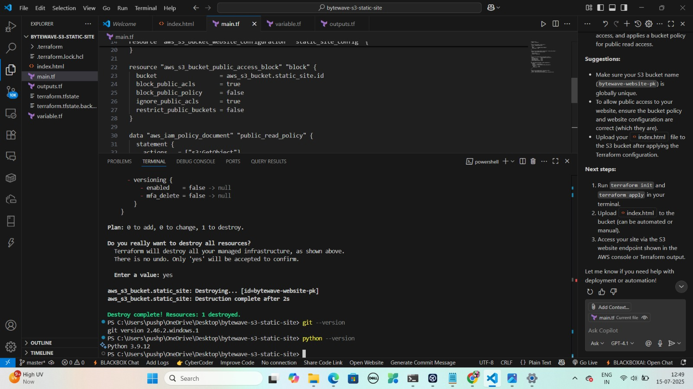

Activity 1: Launch a Static Website on S3 – “ByteWave Solutions”
Objective:
Host a basic HTML webpage on an AWS S3 bucket using Terraform.
Steps:
1. Create an S3 bucket named bytewave-website-[your_initials] (e.g., bytewave-website-ak).
2. Enable static website hosting with:
- index.html as the main file
3. Block all public access using aws_s3_bucket_public_access_block
4. Attach a bucket policy to allow public read access to index.html
5. Upload index.html from your system (via CLI or Console)
6. Output the static website endpoint URL using Terraform
Goal:
Provide ByteWave Solutions with a serverless and reliable web presence via AWS S3.
 
